Настройка сценария реагирования: очистка журнала событий (Windows)¶
Пошаговое руководство разворачивает сквозной сценарий детектирования и
реагирования для одной из самых распространённых техник заметания следов —
очистки журнала событий Windows (MITRE ATT&CK
T1070.001, Indicator Removal:
Clear Windows Event Logs). За событием LogFileCleared система должна не просто
зафиксировать факт, а автоматически собрать контекст на хосте, изолировать
учётную запись и вернуть её в строй после разбора инцидента.
Сценарий целиком собирается из стандартных сущностей платформы и связывает их в единую цепочку:
- Операции PowerShell — что агент умеет делать на хосте и в AD.
- Визуализации — как представить данные об авторизациях по инциденту.
- Скрипты — автоматизации, которые дёргают операции и визуализации по шагам.
- Сценарий реагирования — этапы жизненного цикла инцидента (Identification → Containment → Eradication → Recovery), на каждом из которых запускается свой скрипт.
- Правило детектирования — привязка сценария к конкретному типу инцидента и тонкая настройка агрегации и маппинга полей.
- Тестовая генерация инцидента — проверка всей цепочки вживую.
Предварительное условие
Во всех операциях этого сценария используется интеграция PowerShell. Прежде чем настраивать операции (Настройки → Интеграции → Операции), на хосте должен быть установлен Script Agent — иначе операции будет не к чему привязать.
1. Настройка операций PowerShell¶
Операции создаются в интеграции PowerShell (Настройки → Интеграции → Операции). Ниже — все девять операций сценария: шесть работают с локальным хостом, три — с Active Directory.
| № | Операция | Область |
|---|---|---|
| 1 | Получение списка активных сетевых соединений и процессов | Windows (хост) |
| 2 | Поиск подозрительных процессов PowerShell | Windows (хост) |
| 3 | Получение списка активных сессий пользователей | Windows (хост) |
| 4 | Принудительное завершение локального процесса | Windows (хост) |
| 5 | Завершение сессии конкретного локального пользователя | Windows (хост) |
| 6 | Поиск заблокированных учётных записей в домене | Windows AD |
| 7 | Аудит администраторов домена и времени их последнего входа | Windows AD |
| 8 | Блокировка/разблокировка УЗ | Windows AD |
| 9 | Экстренный сброс пароля доменного пользователя | Windows AD |
Операция 1. Получение списка активных сетевых соединений и процессов¶
Описание: поиск подозрительных установленных соединений на сервере агента с определением процессов, которые их инициировали.
Переменные: нет.
$connections = foreach ($line in (netstat -ano)) {
if ($line -match '^\s*(TCP)\s+(\S+)\s+(\S+)\s+(ESTABLISHED)\s+(\d+)\s*$') {
$local = $matches[2]
$remote = $matches[3]
$p_id = $matches[5]
$localPort = ($local -split ':')[-1]
$localAddress = ($local -split ":$localPort")[0]
$remotePort = ($remote -split ':')[-1]
$remoteAddress = ($remote -split ":$remotePort")[0]
$procName = (Get-Process -Id $p_id -ErrorAction SilentlyContinue).Name
[ordered]@{
LocalAddress = $localAddress
LocalPort = $localPort
RemoteAddress = $remoteAddress
RemotePort = $remotePort
Process = $procName
}
}
}
if ($connections) {
$connections | ConvertTo-Json -Compress
} else {
"[]"
}
Операция 2. Поиск подозрительных процессов PowerShell¶
Описание: вывод всех активных процессов PowerShell на хосте агента с отображением полных командных строк запуска — нужно для выявления обфусцированного вредоносного кода.
Переменные: нет.
$processes = try {
$searcher = [wmisearcher]"SELECT ProcessId, CommandLine, ParentProcessId FROM Win32_Process WHERE Name = 'powershell.exe' or Name = 'pwsh.exe'"
$searcher.Get() | ForEach-Object {
[ordered]@{
ProcessId = $_.Properties['ProcessId'].Value
CommandLine = $_.Properties['CommandLine'].Value
ParentProcessId = $_.Properties['ParentProcessId'].Value
}
}
} catch {
try {
Get-WmiObject -Class Win32_Process -Filter "Name = 'powershell.exe' or Name = 'pwsh.exe'" | ForEach-Object {
[ordered]@{
ProcessId = $_.ProcessId
CommandLine = $_.CommandLine
ParentProcessId = $_.ParentProcessId
}
}
} catch {
$wmicOutput = wmic process where "name='powershell.exe' or name='pwsh.exe'" get CommandLine,ParentProcessId,ProcessId /format:csv 2>$null
if ($wmicOutput) {
$wmicOutput | Select-Object -Skip 2 | ForEach-Object {
$parts = $_ -split ',' | Where-Object { $_ }
if ($parts.Count -ge 3) {
[ordered]@{
ProcessId = $parts[-1].Trim()
CommandLine = $parts[1].Trim()
ParentProcessId = $parts[2].Trim()
}
}
}
}
}
}
if ($processes) {
$processes | ConvertTo-Json -Compress
} else {
"[]"
}
Тройной fallback
Скрипт последовательно пробует WMI-searcher → Get-WmiObject → wmic. Это
защищает операцию от расхождений в возможностях PowerShell/WMI на разных версиях
Windows и старых образах, где Get-WmiObject уже удалён.
Операция 3. Получение списка активных сессий пользователей¶
Описание: сбор списка всех пользователей, имеющих в данный момент активные RDP или интерактивные сессии на сервере агента.
Переменные: нет.
Операция 4. Принудительное завершение локального процесса¶
Описание: аварийная остановка вредоносного процесса на хосте агента по его имени.
Переменные: ProcessName (строка).
Операция 5. Завершение сессии конкретного локального пользователя¶
Описание: принудительный сброс активного RDP-подключения пользователя на хосте агента.
Переменные: Username (строка).
Операция 6. Поиск заблокированных учётных записей в домене¶
Описание: выявление учётных записей пользователей, заблокированных в домене из-за превышения попыток ввода пароля.
Переменные: нет.
На проверку
Название операции и выбираемое поле LockedOut говорят о поиске
заблокированных из-за неверного пароля учётных записей, а ключ
-AccountDisabled в Search-ADAccount возвращает отключённые учётные
записи — это разные состояния объекта в AD. Возможно, здесь имелся в виду ключ
-LockedOut. Перед использованием операции в проде стоит сверить с автором
сценария, какое поведение задумывалось изначально.
Операция 7. Аудит администраторов домена и времени их последнего входа¶
Описание: сбор списка учётных записей из группы «Domain Admins» с проверкой времени их последней аутентификации.
Переменные: нет.
Get-ADGroupMember -Identity "Domain Admins" |
ForEach-Object { Get-ADUser -Identity $_.SamAccountName -Properties LastLogonDate } |
Select-Object SamAccountName, Name, LastLogonDate, Enabled
Операция 8. Блокировка/разблокировка УЗ¶
Описание: блокировка или разблокировка учётной записи в домене.
Переменные: Username (строка), Enabled (логический).
Операция 9. Экстренный сброс пароля доменного пользователя¶
Описание: смена пароля пользователя на случайный временный с требованием обязательной смены при следующем входе в сеть.
Переменные: Username (строка), TempPassword (строка).
$SecPassword = ConvertTo-SecureString "{{TempPassword}}" -AsPlainText -Force
Set-ADAccountPassword -Identity "{{Username}}" -NewPassword $SecPassword -Reset
Set-ADUser -Identity "{{Username}}" -ChangePasswordAtLogon $true
Деструктивные операции
Операции 4, 5, 8 и 9 необратимо меняют состояние хоста, сессии или учётной записи в проде (kill процесса, разрыв RDP-сессии, блокировка УЗ, сброс пароля). В сценарии реагирования они должны запускаться только на этапах Локализации и Восстановления, никогда — на этапе идентификации.
2. Настройка визуализаций¶
Визуализации настраиваются в Настройки → Визуализации и используются скриптами идентификации, чтобы приложить к инциденту наглядную картину авторизаций на хосте.
Визуализация 1. «Авторизация на хосте — круговая диаграмм໶
| Блок | Параметр | Значение |
|---|---|---|
| Общее | Имя | Авторизация на хосте - круговая диаграмма |
| Схема данных | Тип источника | Анализ данных |
| Настройки | Тип | Круговая диаграмма |
| Настройки | Поле | Destination User Name |
| Настройки | Метрика | Count |
| Настройки | Аргумент метрики | All rows |
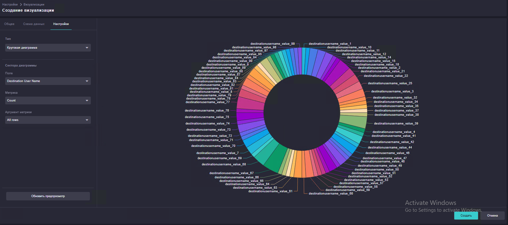
Визуализация 2. «Авторизация на хосте — столбчатая диаграмм໶
| Блок | Параметр | Значение |
|---|---|---|
| Общее | Имя | Авторизация на хосте - Столбчатая диаграмма |
| Схема данных | Тип источника | Анализ данных |
| Настройки | Тип | Столбчатая диаграмма с накоплением |
| Горизонтальная ось | Поле | Collected Date |
| Горизонтальная ось | Интервал группировки | Час |
| Горизонтальная ось | Сортировка / порядок | Collected Date, по возрастанию |
| Вертикальная ось | Агрегатные функции | count all rows |
| Серия | Поле | Destination User Name |
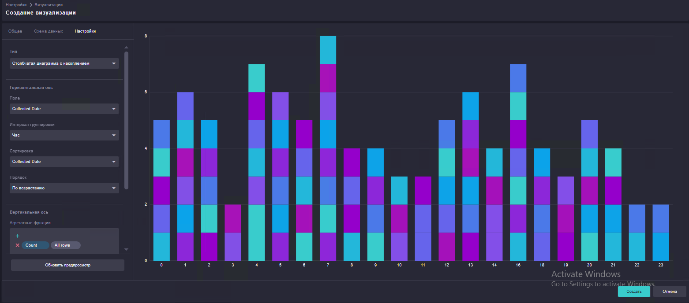
3. Настройка скриптов¶
Скрипты (Настройки → Скрипты) — это оркестрация: каждый шаг вызывает операцию
интеграции или визуализацию и передаёт данные дальше по цепочке. Во всех трёх
скриптах точка входа принимает один и тот же входной параметр — se типа
«Событие ИБ», то есть сработавшее событие LogFileCleared, из которого скрипты
достают имя хоста и имя учётной записи.
Скрипт 1. «Очистка журнала — идентификация»¶
Собирает контекст вокруг события, ничего не меняя на хосте.
Переменные скрипта:
| Имя | Тип | Значение |
|---|---|---|
$Now |
Дата и время | now() |
$From |
Дата и время | addHours($Now, -24) |
Точка входа: параметр se, тип «Событие ИБ».
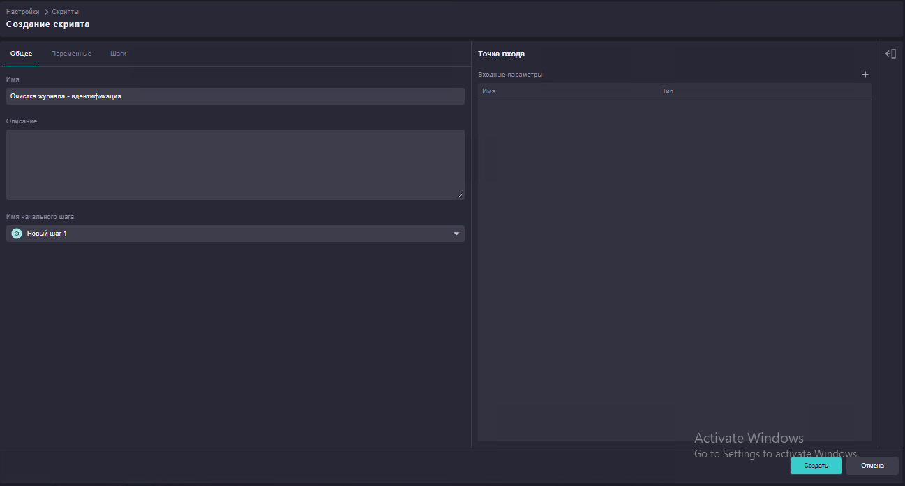
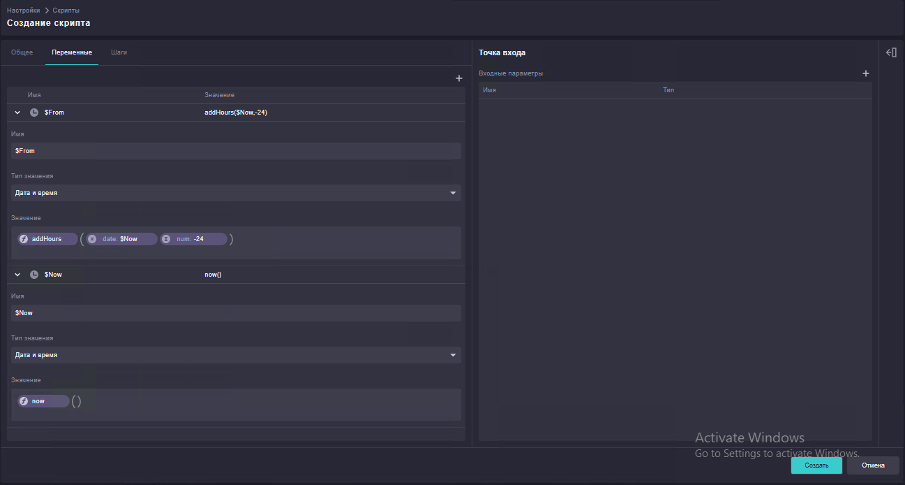
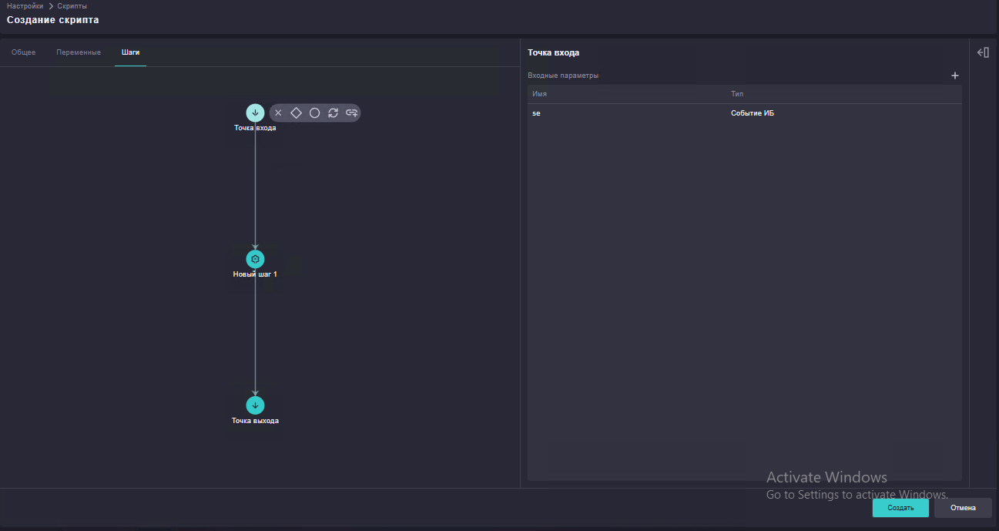
Шаги:
-
Получение активных сессий на хосте — запуск интеграции PowerShell, операция «Получение списка активных сессий пользователей».
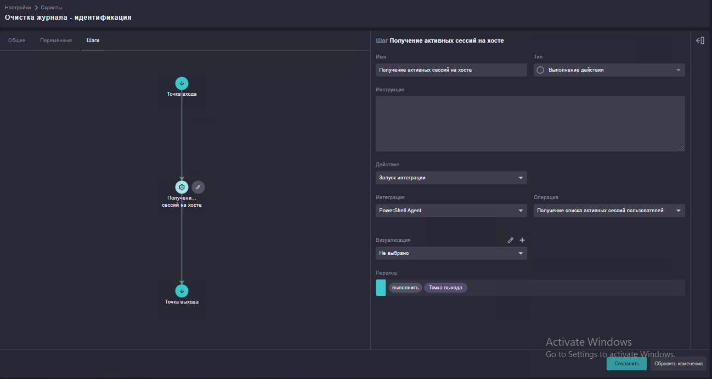
-
Авторизации на хосте — круговая диаграмма — запуск интеграции «Анализ данных», операция «Получить значения из анализа данных», визуализация — круговая диаграмма из блока 2. Параметры:
offset=0(константа),limit=1000(константа);fromdate=$From,todate=$Now(переменные);- фильтр:
Destination Host ID equals se(имя системы из входного события) илиEvent ID equals 4624(успешный вход, константа).
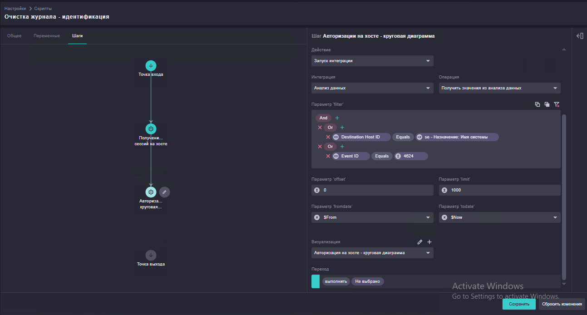
-
Авторизации на хосте — столбчатая диаграмма — тот же вызов «Получить значения из анализа данных» с идентичными фильтром и параметрами, но с визуализацией-столбчатой диаграммой из блока 2 (скриншот этого шага не приводим — он совпадает с предыдущим с точностью до выбранной визуализации).
-
Получение списка активных сетевых соединений и процессов — запуск интеграции PowerShell, операция «Получение списка активных сетевых соединений и процессов».
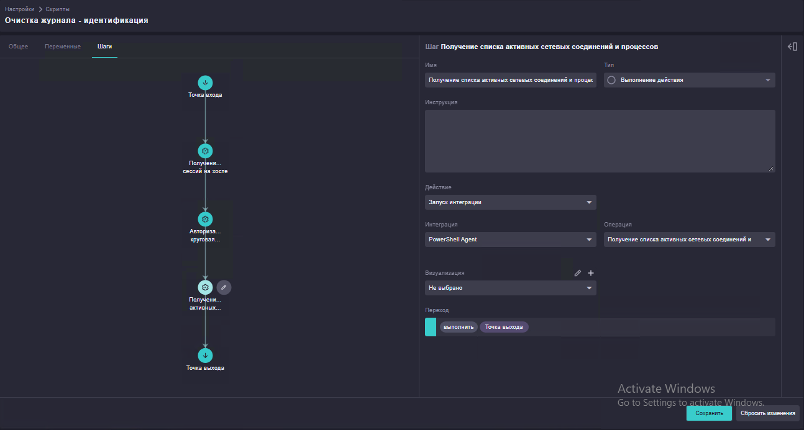
-
Переход в точку выхода.
Скрипт 2. «Очистка журнала — локализация»¶
Останавливает активность скомпрометированной учётной записи.
Точка входа: параметр se, тип «Событие ИБ».
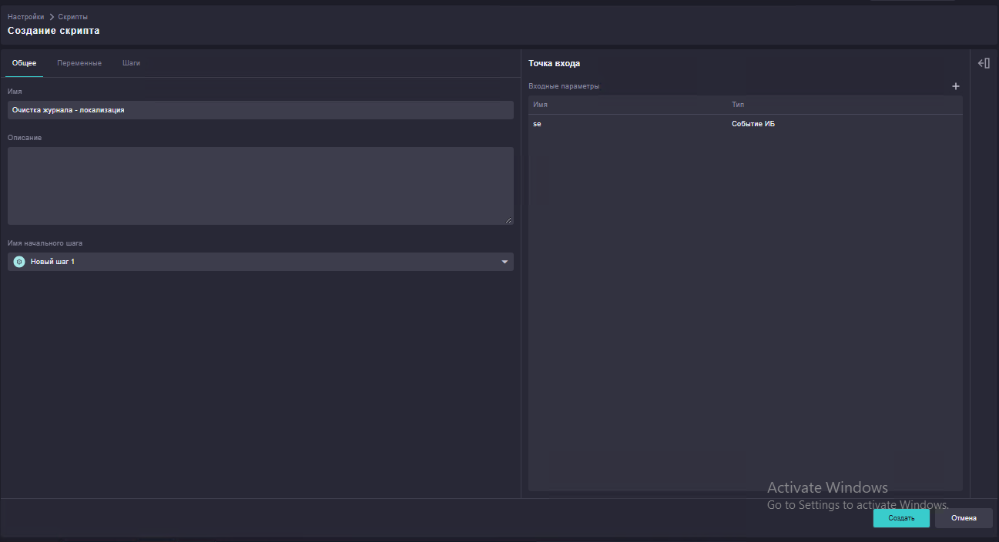
Шаги:
-
Завершение сессии пользователя — запуск интеграции PowerShell, операция «Завершение сессии конкретного локального пользователя». Параметр
Username=se(источник — имя учётной записи из входного параметра).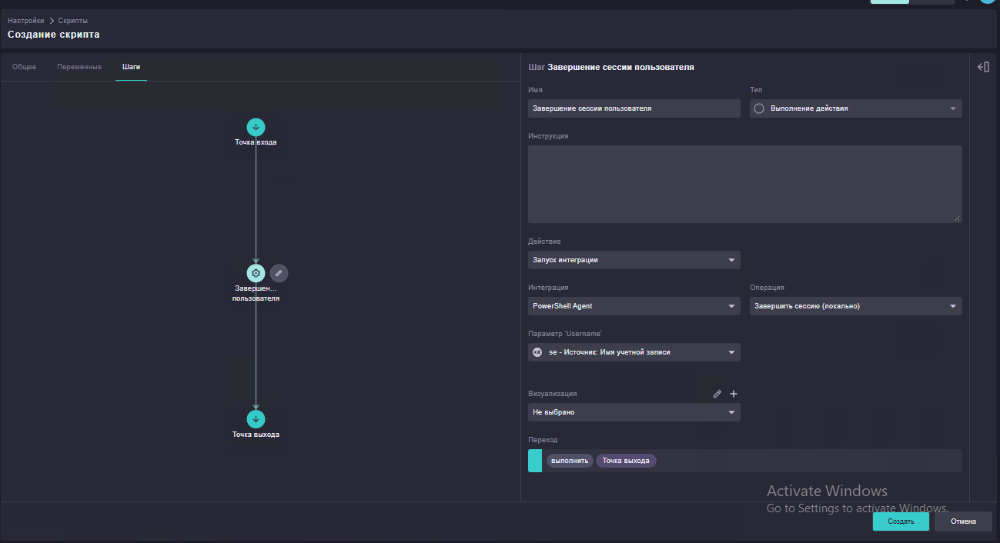
-
Блокировка доменной УЗ пользователя — запуск интеграции PowerShell, операция «Блокировка/разблокировка УЗ». Параметр
Username=se(имя учётной записи),Enabled=false(константа).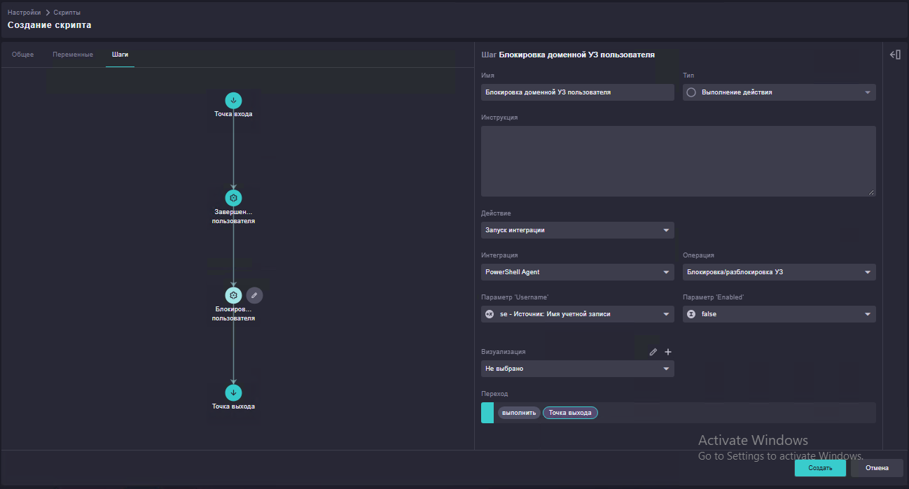
-
Переход в точку выхода.
Скрипт 3. «Очистка журнала — восстановлени延
Возвращает учётную запись в рабочее состояние после разбора инцидента.
Точка входа: параметр se, тип «Событие ИБ».
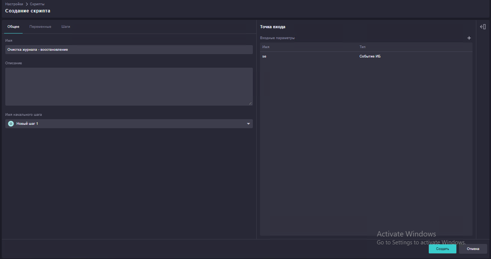
Шаги:
-
Разблокировка доменной УЗ пользователя — запуск интеграции PowerShell, операция «Блокировка/разблокировка УЗ». Параметр
Username=se(имя учётной записи),Enabled=true(константа).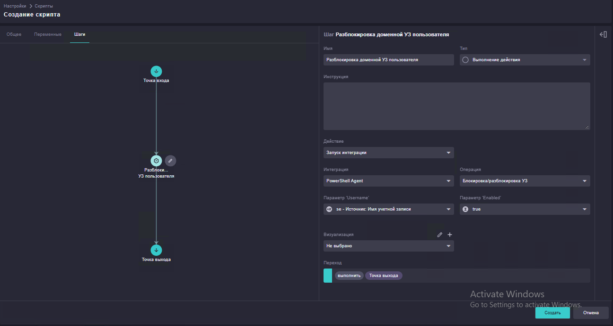
-
Переход в точку выхода.
4. Настройка сценария реагирования¶
Сценарий реагирования (Работа с инцидентами → Сценарии реагирования) связывает три скрипта с этапами жизненного цикла инцидента.
Имя: Очистка журнала. Регламент: Регламент обработки СИБ.
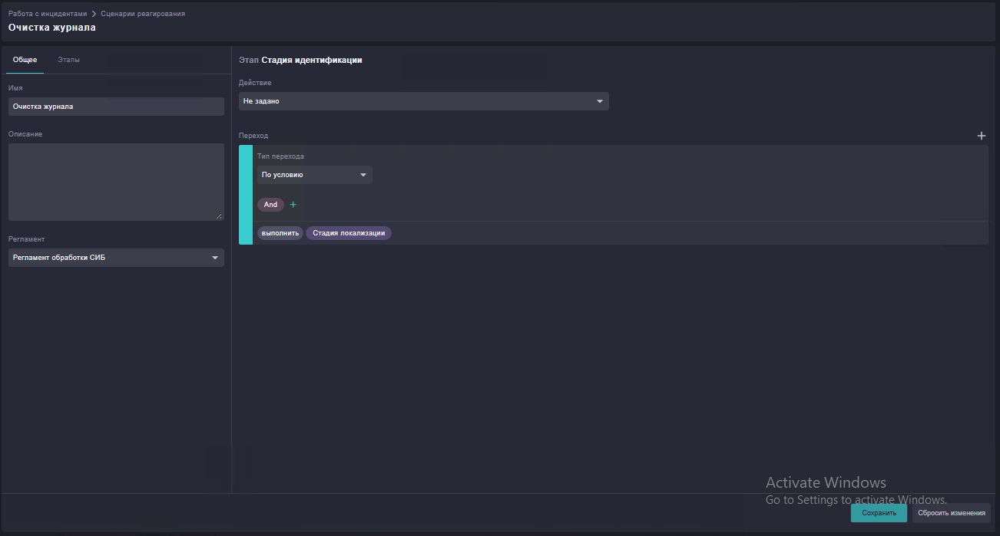
| Этап | Действие | Переход |
|---|---|---|
| Идентификация | Запуск скрипта «Очистка журнала — идентификация» (параметр se — Событие ИБ) |
По условию (безусловно) → Локализация |
| Локализация | Запуск скрипта «Очистка журнала — локализация» (параметр se — Событие ИБ) |
По условию (безусловно) → Уничтожение |
| Уничтожение | Действие не задано — точка для ручного решения аналитика | Вручную → Восстановление или вручную → Финальный этап |
| Восстановление | Запуск скрипта «Очистка журнала — восстановление» (параметр se — Событие ИБ) |
По условию (безусловно) → Финальный этап |
| Финальный этап | — | — |
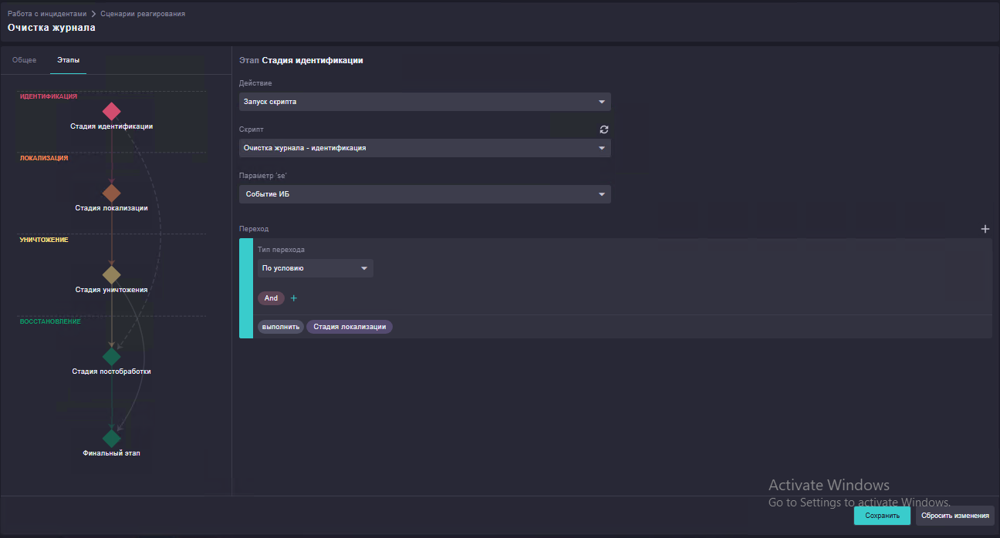
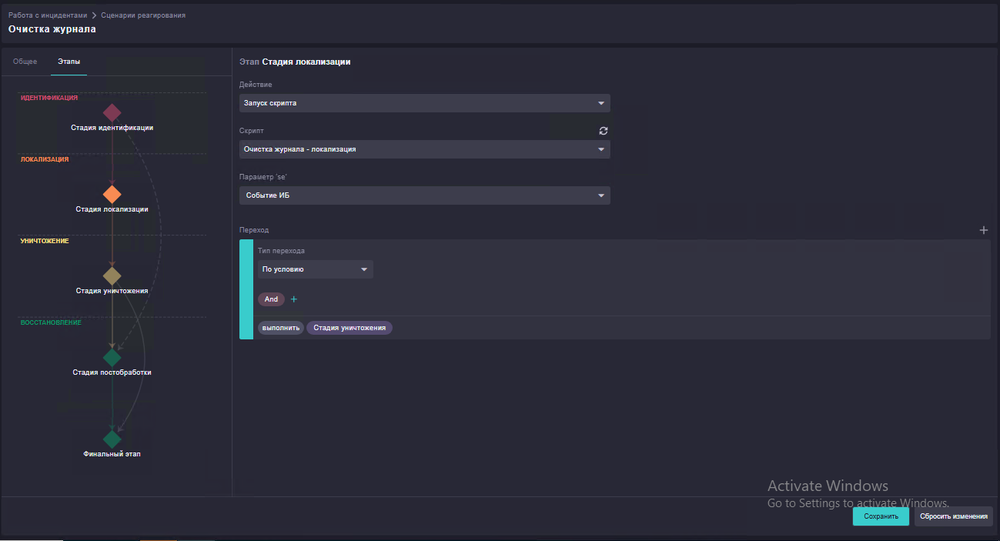
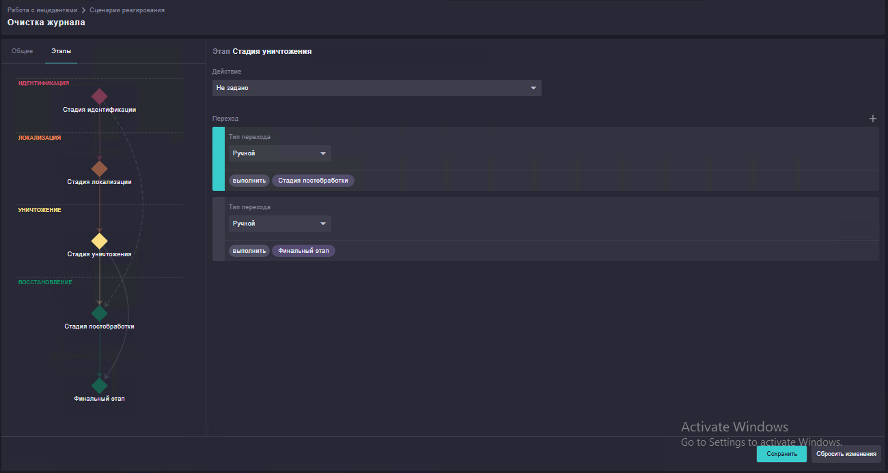
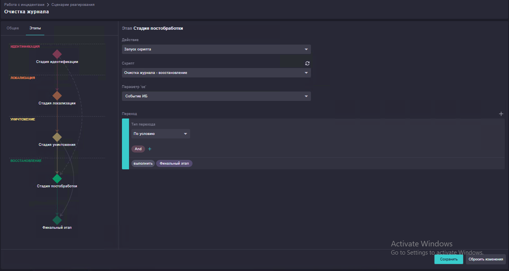
Этап «Уничтожение» намеренно оставлен без автоматизации: сброс пароля (операция 9) или другие деструктивные шаги отдаются на усмотрение аналитика после того, как идентификация подтвердила инцидент, а не выполняются автоматически.
5. Настройка детектирования СИБ¶
Три точки конфигурации нужно свести вместе, чтобы событие LogFileCleared
превращалось в инцидент с уже привязанным сценарием реагирования.
5.1. Правило создания событий ИБ¶
- Работа с инцидентами → Правила создания событий ИБ → открыть правило
WorkFlow_CreateNewSecurityEventи включить его. -
В блоке «Правила переопределения значений свойств» добавить условие:
Detection Id equals INC_025→Сценарий реагирования= Очистка журнала.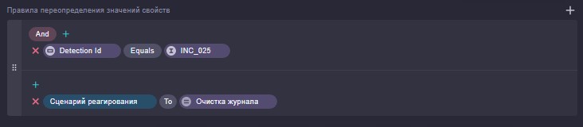
5.2. Агрегация инцидента¶
Детектирование → Стандартные справочники → WorkFlow_Incident_Settings_by_Customer
→ найти строку INC_025 → выставить AggregationTime в миллисекундах (например,
1000).
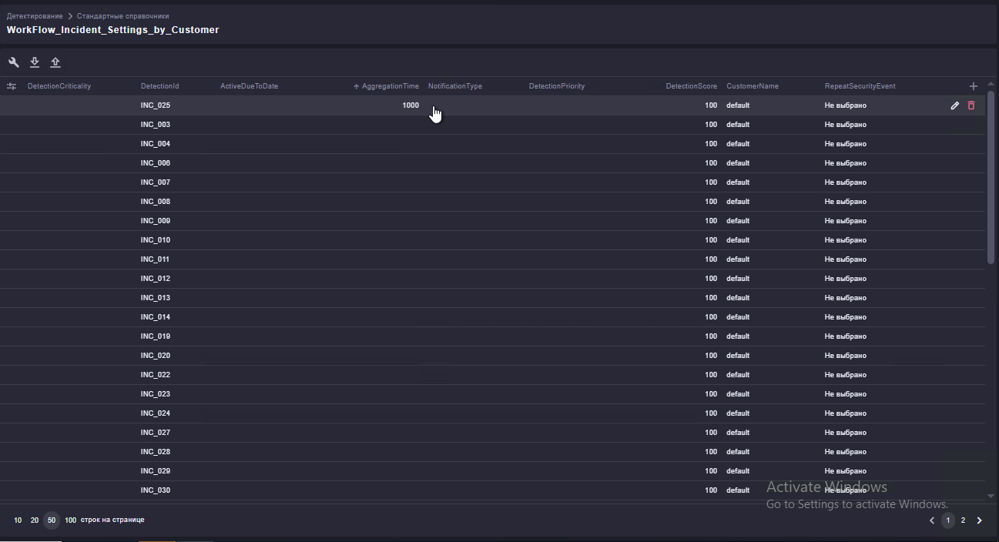
5.3. Профиль сопоставления полей¶
Источники и сбор событий → Профили сопоставления → Microsoft Windows → Поля модели события → Source User Name.
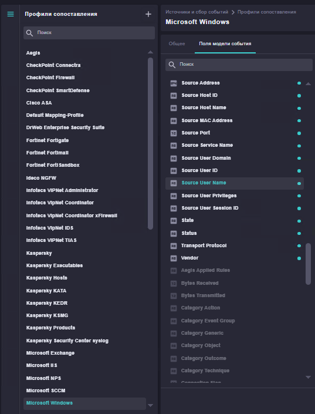
В выражениях справа нужно найти #lower_LogFileCleared_SubjectUserName и заменить
его значение с lower(winlog.user_data.SubjectUserName) на:
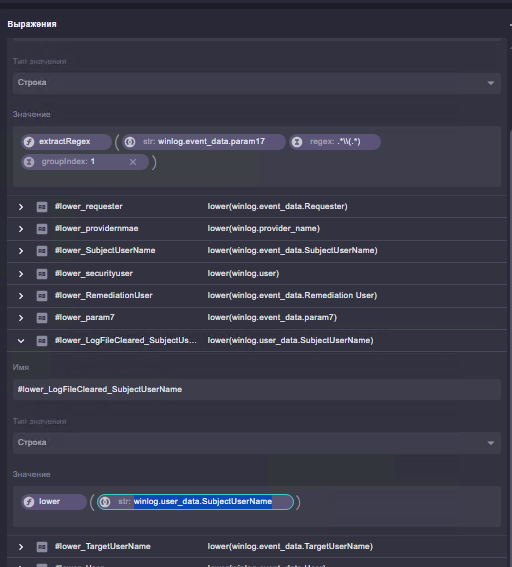
Не перепутайте выражение
В списке выражений профиля соседствуют похожие имена (#lower_requester,
#lower_SubjectUserName, #lower_securityuser и т. д.) — редактируется именно
#lower_LogFileCleared_SubjectUserName. Уберите обёртку lower(...) целиком,
иначе имя пользователя в модели события окажется в нижнем регистре и не
совпадёт с реальным SamAccountName, который скрипты передают операциям AD.
Сохраните изменения профиля.
6. Генерация тестового инцидента¶
Проверка всей цепочки — сымитировать саму технику атаки на хосте, где установлен Script Agent:
-
Откройте Event Viewer.
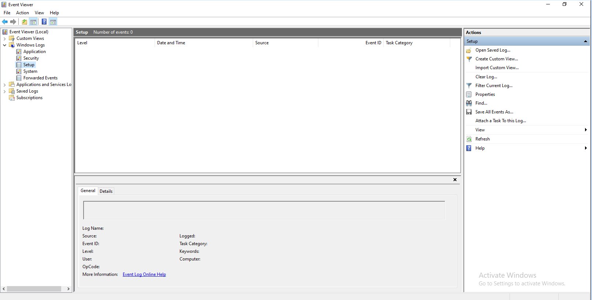
-
В дереве слева выберите любой журнал (например, «Setup»), нажмите правой кнопкой мыши и выберите Clear Log…
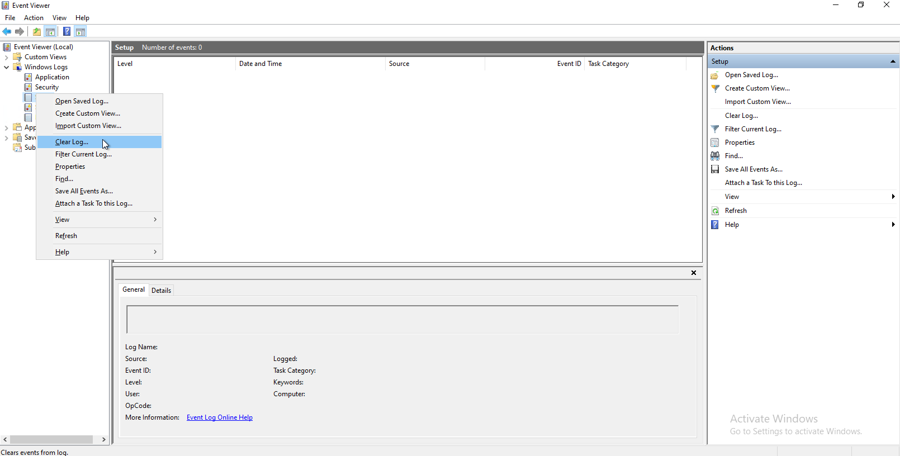
-
В диалоге подтверждения нажмите Clear.
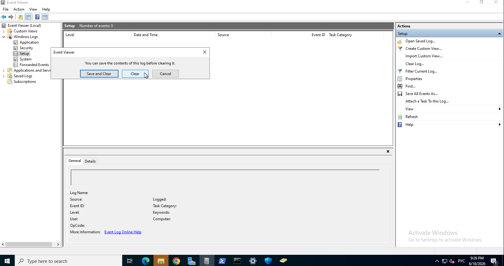
Только в тестовом контуре
Очистка журнала событий — это то самое действие (Windows Event ID 1102,
«The audit log was cleared»), которое сценарий должен детектировать. Выполняйте
шаг исключительно на тестовом хосте: это симуляция действий злоумышленника, а
не рутинная операция обслуживания.
После этого действия ожидаемая цепочка выглядит так: агент собирает событие
LogFileCleared → профиль сопоставления «Microsoft Windows» подставляет имя
учётной записи из winlog.user_data.SubjectUserName → правило
WorkFlow_CreateNewSecurityEvent создаёт событие ИБ и по Detection Id = INC_025
привязывает сценарий «Очистка журнала» → инцидент агрегируется по настроенному
AggregationTime → сценарий реагирования последовательно проходит
Идентификацию (сбор сессий, авторизаций и сетевых соединений), Локализацию
(завершение сессии и блокировка УЗ) и — после решения аналитика на этапе
Уничтожения — Восстановление (разблокировка УЗ).
Если инцидент не создался или сценарий не запустился — в первую очередь проверьте пункты 5.1–5.3: это самые частые точки ошибки при повторной настройке сценария.